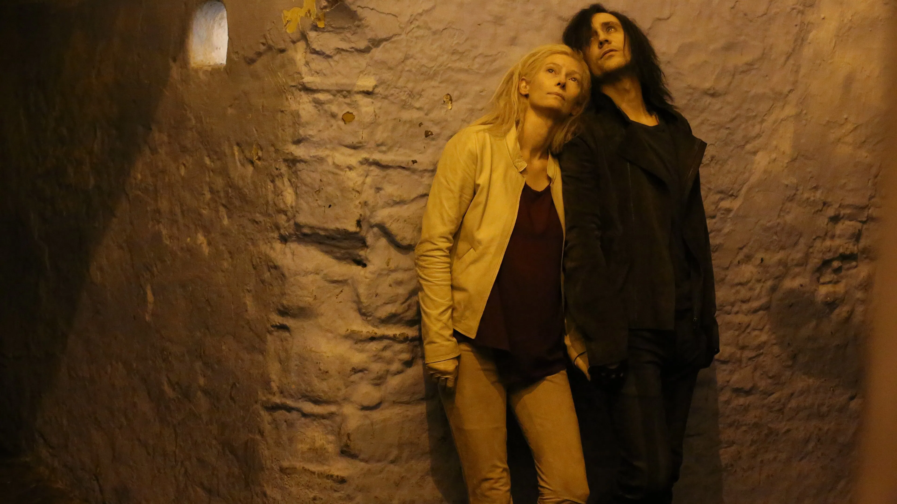

“To remember beauty, even when it’s gone, is to remain faithful to its existence.”
Adam and Eve, vampires, blood, Detroit’s bones creak, Tangier exhales, and two lovers walk the edges of both. This is not yet another story of vampires hunting for blood, being monstrous creatures of night, no. This is the story of longing for what still feels uncorrupted, a taste of whatever remains holy. In Jim Jarmusch’s Only Lovers Left Alive, blood is not a spectacle, it is ritual. Adam and Eve move through Detroit and Tangier like the last caretakers of a dwindling shrine, preserving purity drop by drop in a century that dilutes everything it touches.
By daylight, the world consists of speed and hunger for more to earn and captivate, for more to show and cultivate. At night, Adam fingers a guitar as if tuning a relic, while vinyl spins, tubes glow, dust glitters in lamplight. Eve reads as though reciting a prayer from the oldest book, her fingers gently touching each page as if she is touching the hand of a writer. Between them, love becomes an archive: they curate tenderness of it the way others collect artifacts, carefully, refusing to abandon a reverence most people no longer recognize.
These two are immortals, vampires. They have outlived movements, fashions, revolutions, and the optimism that fueled them. Adam’s exhaustion is the fatigue of a witness who has seen art survive and meaning drain away. Eve’s patience is the faith of someone who believes memory can still keep the fire lit. One mourns, while the other remembers. Together, they endure, the most devotional verb left to lovers in an age like ours.
Blood
Blood, in Only Lovers Left Alive, is revered, not consumed in usual vampiristic style. Adam and Eve sip it from crystal glasses as if performing a private sacrament, their movements measured and ritualistic, their faces lifted in quiet ecstasy. There’s nothing animalistic about it: no frenzy, no violence. What Jarmusch gives us instead is communion: a moment of stillness in a world of excess.
When it comes to Adam, the act borders on despair, as his style is also. His hunger is not for blood itself but for purity, something untainted by the decay that surrounds him. He collects rare instruments, builds his own cables, and scavenges for the old world’s remnants. The blood he drinks, purified by human hands, becomes a stand-in for the clarity he can no longer find in art or thought. It is the last remaining proof that perfection, however fleeting, still exists.
Eve, however, drinks differently. Where Adam’s movements tremble with fatigue, hers radiate serenity. She treats blood more as an act of remembrance, a taste that reconnects her with the continuity of life. When she closes her eyes, we can sense gratitude in her, because for her, this act is dhikr (remembrance, if we take this word out of Islamic context) of what the world once was, of what still might be. Blood replaces the sacred because the sacred has been forgotten. Like prayer, it must be taken slowly, reverently, and never wasted. “The world’s become too toxic,” Adam says, and he isn’t only speaking about blood.
Memory
Eve carries memory gently, with reverence, while Adam’s despair is a slow corrosion, Eve’s faith is an act of care. She reads from worn books in the dim light, her fingers brushing the paper as if she could still feel the pulse of the hands that wrote them. Her memory stretches across centuries, yet she never sounds nostalgic. She does not mourn the past, she only gently tends to it. Where Adam fears that meaning has vanished, she knows that meaning merely hides. Her patience is devotion, the kind that keeps love alive long after the feeling has faded into form. Every poem she recites, every name she whispers, is a quiet resurrection of meaning.
The contrast between them forms the heartbeat of the film. Adam represents the intellect’s exhaustion, the modern mind collapsing under the weight of its own brilliance. Eve represents the heart’s endurance, the sacred trust of continuity. Together, they are not immortals in the ordinary sense; they are witnesses to how creation persists even when civilization forgets.
In Eve’s world, remembrance itself becomes resistance against cynicism, against decay, against forgetting. She shows that memory is not the opposite of death but the proof that life has touched us. To remember beauty, even when it’s gone, is to remain faithful to its existence.
The Sacred Hunger
Every being hungers, but Adam and Eve’s hunger is of a different order, the order of existing in a time that no longer believes in wonder. Their thirst for blood is not predatory in a vampiristic way; it is devotional in a soul-fulfilling way. Each sip is a plea for aliveness, a fragile way of saying: we still wish to feel.
In Jarmusch’s world, the sacred has evaporated from the surface of things, and what remains is longing, a quieter, humbler form of belief. The vampires’ survival depends not on domination in a usual way, but on tenderness: they wait, they share, they refuse to steal. Their restraint is their ethic, in the midst of a culture obsessed with consumption, they practice reverence during the quiet nights, hiding from the sun. This is the sacred hunger, the yearning to touch what cannot be owned. It is the same desire that drives artists, lovers, and believers alike: the ache to participate in something greater than themselves. Adam and Eve drink from their vials the way we hold on to art, to memory, to each other, as if each moment might be the last pure thing left.
Their immortality, then, isn’t a gift, it’s a calling. They are keepers of meaning in a world that has forgotten how to remember. And in that calling, Jarmusch turns the myth of the vampire inside out: no longer a symbol of consumption, but of care. They drink to remember what it means to feel alive. They know the world has lost its symbols, its sense of sacred proportion, yet they persist, because they know that forgetting beauty would be worse than dying, that is why they still drink, still love, still create.
In the end, Only Lovers Left Alive is not about immortality, it’s about endurance. About two beings who keep the sacred alive through care, restraint, and remembrance. They remind us that faith does not always wear the name of religion, sometimes it looks like attention, sometimes it sounds like music played for no one, and sometimes it is simply two people choosing not to give up on the world, even when the world no longer deserves it.
Because to love, to create, to remember, these are the ways we keep meaning flowing. And meaning, like blood, must never stop.